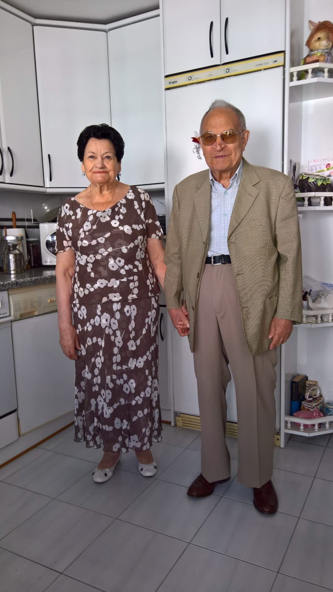

¡Hola guapos!
I am Alejandra
Your spanish girl GRRR😉
I am from Madrid, the capital of Spain 🇪🇸 I love both my city and my country. Nevertheless, I have gone to a french school all of my life. Plus, my dad was born in France. That made me discover the french culture and traditions. That is partly the reason why I wanted to apply to the university I’m currently enrolled in, ESSEC Business school. I am in my first year of Global BBA. I am 18 years old at the moment. My birthday is on the 25th of december which is funny 🎄 I have a lot of different interests and hobbies that I’m going to present to you right now 🙂
Check out my playlist!Fashion 👘
Okay, first of all, I can’t say that I’m the type of person that follows every fashion runway or every designer collection… But it is true that I love fashion in the sense that I consider it a form of art 🨠I love to spend time looking at new clothes or even personalizing mine ✂ï¸
Family 👨‍👩‍👧‍👧
My maternal side of the family lives in Burgos, a small city two hours away from Madrid to the north. It is always super cold and rainy ⛈️. It is a very traditional and old city that I love. I have been going there since I was born and love everything about it. Plus, I get to eat my grandmother’s food 👵
Friends 🤝
I can gladly say that I have gotten very lucky both in Madrid and Cergy because of the people that I have met. They are all very nice and funny people whom I love to hang out with 😚
Food 🤤
Coming from a country like Spain, who would not die for its food? 🥘 Having moved to France has made me realize how original and good both french and spanish cuisine are. Because of Covid, it is not that easy to go back to Spain like that, and let me tell you what, I miss jamón serrano! 🍖
Travel 🗺️
I have been travelling for all my life, since I was only a few months old. I am passionate about it, discovering new cultures and traditions and even behaviours fascinates me. I have been to more than 50 different countries in all continents. I hope that Covid will end soon enough so that I can travel again ✈️